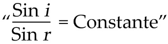

LULLABY
Ngày mà Lullaby quyết định sẽ không đến trường nữa, trời hẵng còn sớm, độ giữa tháng mười. Nó đã ra khỏi giường, đi chân trần băng ngang phòng, tách hai lá màn xếp nhìn ra bên ngoài. Ngoài kia trời ngập nắng, chỉ cần chồm tới trước một chút là thấy một mẩu trời xanh. Bên dưới có ba bốn chú bồ câu đang nhảy nhót trên vỉa hè, lông xù lên vì gió. Bên trên những chiếc xe hơi đang đỗ, biển xanh thẫm một màu, một chiếc thuyền buồm trắng đang tiến về trước một cách nhọc nhằn. Lullaby ngắm tất cả những điều này, và nó cảm thấy trong lòng thật nhẹ nhõm khi quyết định không đến trường nữa.
Nó quay vào giữa phòng, ngồi vào bàn, và bắt đầu biên một lá thư mà không thèm bật đèn lên.
Gửi ba yêu dấu,
Hôm nay trời đẹp lắm. Bầu trời xanh thật là xanh đúng như con thích ấy. Con ước gì ba ở đây để ngắm bầu trời này. Biển cũng xanh thật là xanh. Mùa đông sắp đến rồi. Và một năm thật dài nữa sẽ lại bắt đầu. Con hi vọng ba đến sớm, vì con không biết bầu trời này và biển này có đợi ba được không. Sáng nay khi thức dậy (cách đây hơn một tiếng) một lần nữa con lại tưởng mình đang ở Istanbul. Con muốn nhắm mắt lại để khi mở mắt ra con lại tưởng mình đang ở Istanbul. Ba nhớ không? Ba đã mua hai bó hoa, một cho con và một cho xơ Laurence. Những bông hoa to màu trắng thơm ngát (vì vậy mà người ta gọi chúng là hương thơm phải không?). Chúng thơm đến mức mình đã để chúng trong phòng tắm. Ba còn nói mình có thể uống nước ở trong đó, và con đi vào phòng tắm và con uống thật lâu, và mấy bông hoa của con héo hết. Ba có nhớ không?
Lullaby ngừng viết. Nó cắn nhẹ lên đầu bút bi xanh, nhìn vào tờ giấy biên thư. Nhưng nó không đọc. Nó chỉ nhìn những chỗ giấy trắng. Nó nghĩ sẽ có gì đó hiện lên, chim bay trên bầu trời chẳng hạn, hay một con tàu trắng chầm chậm lướt qua.
Nó nhìn lên đồng hồ báo thức trên bàn: tám giờ mười phút. Đó là một cái đồng hồ báo thức du lịch nhỏ bọc da tắc kè màu đen, cứ tám ngày phải lên dây một lần.
Lullaby viết vào tờ giấy biên thư.
Ba yêu dấu, con muốn ba đến lấy lại cái đồng hồ báo thức buổi sáng. Ba đã đưa nó cho con trưóc khi con đi Tehran và mẹ và xơ Laurence đều nói là nó rất đẹp. Con cũng thấy nó rất đẹp, nhưng con nghĩ là bây giờ con không cần đến nó nữa. Vậy nên con muốn ba đến đây để lấy nó về. Nó sẽ lại giúp ích cho ba. Nó chạy tốt lắm, không hề gây ra tiếng động nào trong đêm.
Nó đút lá thư vào một phong bì gửi máy bay. Trước khi dán lại, nó tìm thêm một thứ gì khác để luồn vào bên trong. Nhưng trên bàn chẳng có gì khác ngoài giấy, sách vở, và những mẩu bánh bít-cốt vụn. Thế là nó đề địa chỉ trên phong bì.
Ông Paul Ferlande
P.R.O.C.O.M.
Số 84, đại lộ Ferdowsi
Tehran
Iran
Lullaby để lá thư trên mép bàn, rồi đi nhanh vào buồng tắm để đánh răng và rửa mặt. Nó muốn xối một miếng nước lạnh nhưng lại sợ tiếng ồn sẽ đánh thức mẹ dậy. Nó lại qua về phòng, vẫn đi chân trần, rồi vội vàng thay đồ. Lullaby mặc một chiếc áo len trùm đầu màu xanh lá, một chiếc quần nhung màu nâu và áo khoác màu hạt dẻ. Rồi nó xỏ tất vào và mang một đôi giày cổ cao, đế kếp. Nó chải mớ tóc vàng của mình mà không cần nhìn vào gương, rồi nhét trong túi xách tất cả những gì tìm thấy chung quanh, trên bàn và trên ghế: một thỏi son môi, khăn giấy, bút bi, chìa khóa, lọ Aspirin. Nó không biết chính xác mình sẽ cần gì, nên tống một cách lộn xộn những gì nó thấy trong phòng vào đó: một cái khăn choàng cổ màu đỏ được cuộn tròn, một khung hình bọc vải giả da cũ kỹ, một con dao nhíp, một chú chó nhỏ bằng sứ. Trong tủ áo, nó mở một hộp giày và lôi ra xấp thư. Trong một hộp khác, nó tìm thấy một bức tranh lớn. Nó xếp bức tranh lại và bỏ vào trong túi xách cùng những lá thư.
Trong túi áo mưa, nó tìm thấy vài tờ tiền giấy và một nắm tiền xu, liền bỏ vào trong túi xách. Trước khi đi, nó quay lại chỗ bàn ăn và lấy lá thư vừa viết ban nãy. Nó mở hộc bàn bên trái ra, lục lọi trong mớ đồ dùng và giấy má cho đến khi tìm được một cây kèn harmonica, trên đó có đề

và chữ “david” được khắc bằng đầu dao nhọn.
Nó ngắm cây harmonica trong một giây, đoạn bỏ vào trong túi xách, khoác lên vai phải và bước ra.
Bên ngoài, trời nắng nóng, trời và biển sáng rực. Lullaby đưa mắt tìm mấy con bồ câu nhưng chúng đã biến mất. Xa xa, gần rất gần đường chân trời, chiếc thuyền buồm màu trắng đang từ từ di chuyển, hơi ngả xuống mặt nước.
Lullaby cảm thấy tim mình đang đập thật nhanh. Trái tim đang hưng phấn và kêu inh ỏi trong lồng ngực cô gái. Sao thế nhỉ? Có phải vì bầu trời cùng toàn bộ thứ ánh sáng ấy đã làm cho trái tim cô gái say mềm? Lullaby dừng lại trước lan can, đưa hai tay ôm chặt lồng ngực. Nó nói giữa các kẽ răng, có đôi chút giận dỗi:
— Cái thằng này, phiền thật!
Rồi lại lên đường, cố gắng không để ý tới trái tim mình nữa.
Mọi người đang trên đường đi làm. Họ ngồi trong ô-tô, phóng xe thật nhanh suốt con đường hướng về trung tâm thành phố. Mấy chiếc xe đạp máy thi nhau chạy trong tiếng quay của những ổ bi. Những người ngồi trong ấy, trong những chiếc ô-tô mới coóng, cửa kính đóng chặt, dường như đang rất vội. Khi lướt qua Lullaby, họ khẽ quay sang nhìn cô gái. Thậm chí vài gã còn bóp còi từng hồi liên tục, nhưng Lullaby không nhìn bọn họ.
Nó cũng thế, nó cũng bước nhanh dọc trên con lộ này, không tạo ra chút tiếng động nào dưới lớp đế kếp. Nó đi về hướng ngược lại, phía những ngọn đồi và những mỏm đá. Nó nhìn ra biển, mắt nheo lại, vì quên không mang theo kính mát. Chiếc thuyền buồm có vẻ như đang đi trên cùng một con đường với nó, cánh buồm lớn tam giác màu trắng căng phồng trong gió. Vừa đi, Lullaby vừa ngắm biển và bầu trời xanh, cánh buồm trắng, những mỏm đá nơi mũi đất, và cảm thấy vô cùng hài lòng khi quyết định không đến trường nữa. Mọi thứ ở đây đẹp đến nỗi trường học dường như chưa bao giờ tồn tại.
Gió thổi vào tóc khiến chúng rối bù, một cơn gió lạnh làm mắt cô gái cay cay, lớp da mỏng hai bên gò má và hai bàn tay đều đỏ ửng. Lullaby nghĩ, thật dễ chịu khi bước đi như thế này, trong nắng và trong gió, mà không biết mình đang đi đâu.
Vừa ra khỏi thành phố, nó gặp ngay con đường buôn lậu ngày xưa. Con đường bắt đầu từ một khóm thông dù, men theo đường bờ biển dẫn xuống những mỏm đá bên dưới. Tại đây, biển còn đẹp hơn biết mấy, dữ dội hơn biết mấy, hứng trọn toàn bộ ánh sáng vào mình.
Lullaby tiếp tục đi về phía trước, trên con đường mòn đó. Nó thấy biển vỗ mạnh hơn. Những con sóng ngắn đập vào các phiến đá, sủi bọt, trôi đi, rồi lại quay trở về. Nó dừng lại trên những phiến đá để lắng nghe âm thanh của biển cả. Nó biết thừa âm thanh ấy chứ, cái tiếng nước vỗ bập bùng, xé toạc nhau ra, rồi quay về với nhau sau khi làm nổ tung không khí. Nó thích tất cả những thứ ấy, ấy thế mà hôm nay, cứ như thể lần đầu tiên nó được nghe thấy chúng. Không gì ngoài những phiến đá trắng, ngoài biển, ngoài gió, ngoài mặt trời. Như thể nó đang đứng trên một con tàu, xa tít ngoài khơi kia, nơi những đàn cá ngừ và những đàn cá heo đang sinh sống.
Lullaby thậm chí còn chẳng nhớ đến trường học nữa. Biển là thế đấy, biển xóa sạch mọi thứ trên đất liền vì biển là thứ quan trọng nhất trên thế giới này. Màu xanh ấy, ánh sáng ấy thật bao la, và gió, và âm thanh dữ dội và dịu dàng của những con sóng, biển giống như một con thú lớn đầu đung đưa và đuôi quất mạnh vào không khí.
Thế nên, Lullaby cảm thấy thật dễ chịu. Nó ngồi trên một phiến đá bằng phẳng, cạnh con đường mòn, và ngắm nhìn. Nó thấy rõ mồn một đường chân trời ngoài kia, một dải đen chia cách mặt biển ra khỏi bầu trời. Nó không còn nhớ gì về đường sá, về nhà cửa, về những chiếc xe hơi và những chiếc xe máy nữa.
Nó ngồi trên phiến đá khá lâu. Rồi lại tiếp tục con đường mòn ban nãy. Không còn nhà cửa gì nữa, những tòa biệt thự cuối cùng đều đã nằm ở phía sau. Lullaby quay lại nhìn, nó thấy chúng có vẻ gì đó thật buồn cười, những cánh cửa màu tím in trên tường trắng, tựa như đang say ngủ. Ở đây cũng chẳng còn vườn tược gì nữa. Len lỏi giữa đất và đá là những giống cây thân trơn kỳ lạ, những bụi gai nhọn, những cây xương rồng vàng đầy sẹo, cây lô hội, cây ngấy và những dây leo. Chẳng còn ai sống ở đây. Chỉ những con thạch sùng bò giữa các khối đá, và hai ba con ong vò vẽ lượn trên những bãi cỏ thơm mùi mật ngọt.
Trời nắng như đốt. Những tảng đá trắng lấp lánh ánh sáng, bọt đá rực rỡ chẳng khác nào những bông tuyết, ở đây thật hạnh phúc, như ở bên kia thế giới. Không phải chờ đợi điều gì, cũng chẳng cần đến ai. Lullaby nhìn mũi đất đang lớn dần trước mắt, vách cắm thẳng xuống biển. Con đường mòn dẫn đến một boong-ke kiểu Đức, phải chui qua một lối đi hẹp nằm dưới mặt đất. Trong hầm, khí lạnh khiến cô gái trẻ rùng mình. Không khí ẩm thấp và tối tăm như trong lòng hang. Các bức tường của pháo đài sặc mùi khai và ẩm mốc. Đầu còn lại của đường hầm thông ra một khoảnh đất xây bằng xi-măng, có một bức tường thấp bao quanh. Một ít cỏ mọc lên từ các vết nứt dưới sàn.
Lullaby nhắm mắt lại vì chói nắng. Giờ nó đã hoàn toàn đối diện với gió và biển.
Bỗng nhiên, nó bắt gặp những dấu hiệu đầu tiên, ngay trên bức tường. Một dòng chữ lớn được viết nguệch ngoạc bằng phấn, chỉ ghi gọn lỏn như sau:
“HÃY TÌM TÔI”
Lullaby nhìn quanh một lúc, rồi thấp giọng, nói:
— Vâng, nhưng là ai mới được?
Một con nhạn biển trắng bay qua, kêu oang oác.
Lullaby nhún vai, rồi lại đi. Khó hơn ban nãy, vì con đường mòn đã bị phá hủy, có lẽ là trong trận chiến cuối cùng, bởi những người đã dựng lên căn hầm này. Phải leo trèo, nhảy từ tảng đá này sang tảng đá kia, dùng cả tay để không bị trượt. Bờ biển mỗi lúc một dốc, và ở ngay bên dưới, Lullaby thấy mặt nước thăm thẳm, màu xanh ngọc, dội vào các bờ đá.
May mà nó biết quá cách đi giữa những tảng đá, thứ mà nó rành nhất là đằng khác. Phải tính toán thật nhanh bằng mắt, nhận ra những chỗ tốt, xem những tảng nào có thể làm bậc thang và bàn nhảy, đoán xem đường nào sẽ dẫn lên trên: phải tránh những ngõ cụt, đá mủn, kẽ nứt, bụi gai.
Có thể xem đây như một bài tập toán. “Cho một tảng đá góc bốn mươi lăm độ và một tảng đá khác cách khóm đậu kim hai mét rưỡi, hỏi chúng sẽ giáp nhau ở đâu?” Những tảng đá trắng trông như bàn học, và Lullaby tưởng tượng ra cô Lorti, vẻ mặt nghiêm khắc, đang ngồi chễm chệ trên một tảng đá lớn hình thang, xây lưng ra biển. Mà đó có lẽ cũng không hẳn là một bài toán, ở đây, trước hết ta cần phải tính được trọng lực. “Các em hãy kẻ một đường vuông góc với mặt phẳng để xác định phương”, thầy Filippi nói. Thầy đứng đó, giữ thăng bằng trên một tảng đá nằm nghiêng và cười độ lượng. Những sợi tóc trắng của thầy tạo thành một vương miện trong ánh nắng, và phía sau cặp kính là đôi mắt sáng ngời một cách lạ lùng.
Lullaby mừng vì phát hiện ra cơ thể của nó có thể tìm ra lời giải cho những bài toán này một cách dễ dàng. Nó nghiêng người về phía trước, nghiêng người ra đằng sau, đong đưa trên một chân rồi nhảy một cách khéo léo đặt ngay vị trí mà nó muốn.
“Giỏi lắm, giỏi lắm, cô gái”, giọng nói của thầy Filippi vang lên bên tai. “Vật lý là một môn khoa học tự nhiên, đừng quên điều đó. Cứ tiếp tục như thế, con đang đi đúng đường đấy.”
— Vâng, mà đi đâu mới được ạ? – Lullaby thì thầm.
Quả thực, nó không rõ lắm những thứ này đang đưa mình đi đâu. Nó dừng lại lần nữa để lấy hơi và ngắm biển, nhưng cảnh tượng trước mặt lại đặt cho nó một bài toán khác, vì nó phải tính góc khúc xạ giữa ánh nắng và mặt nước. “Chịu, không bao giờ giải nổi”, nó nghĩ. “Xem nào, hãy áp dụng định luật Descartes”, giọng thầy Filippi lại vang lên bên tai. Lullaby cố gắng nhớ. “Tia khúc xạ…”
“Luôn nằm trong mặt phẳng tới”, Lullaby nói.
“Tốt. Còn định luật thứ hai?” thầy Filippi hỏi.
“Khi góc tới tăng, góc khúc xạ cũng tăng, và tỉ lệ giữa sin hai góc là một hằng số.”
“Hằng số”, vẫn giọng nói đó vang lên. “Nghĩa là?”

“Chỉ số khúc xạ giữa nước và không khí?”
“1,33.”
“Định luật Foucault?”
Chỉ số giữa môi trường này với môi trường kia bằng tỉ lệ vận tốc góc giữa chúng.”
“Suy ra?”
“N2/1 = v1/v2”
Nhưng nắng cứ chiếu liên hồi trên mặt biển, và chuyển từ khúc xạ sang trạng thái phản xạ nhanh đến nỗi Lullaby chẳng tính được nữa. Nó nghĩ, mình sẽ viết thư cho thấy Filippi để hỏi lại sau.
Trời thật nóng. Cô gái trẻ tìm một nơi để tắm. Đoạn nó tìm thấy một vịnh nước tí hon, cách đó một chút, trong vịnh có một bến tàu bị bỏ hoang. Lullaby bước tới sát mặt nước và cởi đồ ra.
Nước rất trong, và lạnh. Lullaby nhào xuống ngay, không một chút đắn đo, cảm nhận dòng nước siết trong từng lỗ chân lông trên da mình. Nó bơi một hồi lâu trong nước, hai mắt mở to. Xong, nó ngồi hong mình trên thềm xi-măng của bến tàu cũ. Bấy giờ, nắng đã đổ thẳng đứng, và ánh sáng không còn phản chiếu như trước đó nữa. Nắng lấp lánh, rực rỡ, ngay trong lòng những giọt nước li ti bám trên da bụng và những sợi lông tơ trên đùi cô gái.
Nước lạnh làm nó dễ chịu hẳn. Nước gội sạch những suy nghĩ trong đầu nó, và Lullaby không còn nghĩ tới những đường tiếp tuyến hay những chỉ số tuyệt đối của mọi vật nữa. Nó muốn biên thêm một bức thư cho ba, bèn lục xấp giấy đang nằm trong túi, rồi viết bằng bút bi, bắt đầu từ cuối trang. Trang giấy lấm lem do tay nó còn ướt.
LLBY
hôn ba
ba mau đến chơi với con, ngay chỗ con đang ở nhé!
Rồi nó viết tiếp ngay giữa trang giấy:
Có lẽ con đang làm vài chuyện dại dột. Đừng giận con. Con thật sự cảm thấy mình như thể đang bị cầm tù vậy. Ba không thể hiểu đâu. Mà có khi ba đã biết tất cả, nhưng ba, ba đủ can đảm để ở lại, con thì không. Ba thử tưởng tượng mà xem, ở khắp mọi nơi toàn là tường, nhiều đến mức ba không tài nào đếm hết được, với nào là kẽm gai, là vỉ nướng, là khung sắt trên các ô cửa sổ! Rồi ba hãy tưởng tượng, một sân trường với toàn bộ các giống cây mà con ghét, nào là cây dẻ, cây đoạn, cây tiêu huyền. Mấy cây tiêu huyền trông tởm lắm, tróc hết vỏ, trông như đang bị bệnh ấy!
Trên đó một chút, nó viết:
Ba biết không, có rất nhiều thứ mà con muốn. Có rất nhiều, rất nhiều, rất rất nhiều thứ mà con muốn, không biết con có thể kể hết cho ba không. Đó là những thứ mà ở đây vô cùng thiếu, những thứ mà ngày xưa con thích ngắm nhìn, cỏ xanh, hoa lá, và chim chóc, những dòng sông. Nếu ba ở đây, ba có thể kể cho con nghe, và con sẽ thấy chúng lần lượt hiện ra chung quanh, nhưng ở trường chẳng có ai biết để mà nói về những thứ ấy. Bọn con gái toàn khóc lóc vớ vẩn! Lũ con trai thì ngốc nghếch! Chúng chỉ quan tâm tới mấy chiếc mô-tô và mớ áo khoác của chúng!
Rồi nó viết ở tuốt đầu trang.
Chào ba, ba thân yêu. Con đang viết thư cho ba trên một bãi biển nhỏ xíu, thực sự rất là nhỏ, đến nỗi con nghĩ nó chỉ dành cho một người, với một bến tàu cũ nát mà con đang ngồi đây (con vừa tắm xong một trận đã đời). Biển đang muốn xơi tái bãi biển nhỏ bé này, nó cứ liếm vào sâu trong bờ, không tài nào khô được. Ba sẽ thấy những vệt nước biển đọng trên lá thư, con hy vọng ba sẽ thích chúng. Con ở đây có một mình thôi, nhưng con vui lắm. Từ bây giờ con sẽ không đến trường nữa, con đã quyết như thế, chấm dứt. Con sẽ không bao giờ tới đó nữa, cho dù người ta có tống con vào tù. Mà có như thế thì cũng chẳng tệ hơn đến trường là bao.
Không còn nhiều khoảng trắng trên tờ giấy nữa, nên Lullaby bắt đầu chơi trò điền vào chỗ trống, hết chỗ này sang chỗ kia, bằng cách ghi thêm những từ và những câu ngắn một cách ngẫu hứng:
Biển xanh
Nắng
Gửi cho con vài nhánh lan trắng
Chòi gỗ, tiếc là nó không có ở đây
Viết thư cho con nha
Có một con thuyền vừa lướt qua, nó đi đâu nhỉ?
Con muốn đứng trên một ngọn núi cao
Bây giờ nơi ba đang ở nắng trông như thế nào?
Kể con nghe chuyện mấy chú vớt san hô đi
Sloughi sao rồi ạ?
Nó kết thúc những khoảng trắng cuối cùng bằng những từ như sau:
Rong
Gương
Xa
Đom đóm
Đua
Con lắc
Rau mùi
Sao
Rồi nó gấp tờ giấy lại và bỏ vào bao thư, cùng một cọng cỏ thơm như mật.
Khi lội ngược về phía những tảng đá, nó bắt gặp, lần thứ hai trong ngày, những dấu hiệu kỳ lạ được viết bằng phấn, trên đá. Có cả những mũi tên để chỉ đường đi. Trên một tảng đá lớn bằng phẳng, nó đọc thấy:
“ĐỪNG NẢN CHÍ!”
Trên một tảng đá khác xa hơn:
“CHUYỆN NÀY CÓ THỂ CHẤM DỨT KHÔNG NHƯ TA MONG ĐỢI”
Lullaby nhìn quanh một lần nữa, nhưng chẳng thấy ai giữa những đá và đá, mặc cho nó nhìn ra xa nhất có thể. Vì vậy nó lại tiếp tục con đường của mình. Nó trèo lên, trèo xuống, nhảy qua các khe hở, và cuối cùng cũng đến tận cùng của mũi đất. Có một khoảng đất bằng phẳng lát đá, và một căn nhà kiểu Hy Lạp.
Lullaby dừng lại, kinh ngạc. Chưa bao giờ nó thấy một ngôi nhà nào đẹp đến thế. Ngôi nhà được xây giữa những tảng đá và cây mọng nước, mặt trổ ra biển, vuông vức và giản dị, hiên nhà có sáu trụ cột chống đỡ, trông như một ngôi đền thu nhỏ. Nhà sơn màu trắng sáng, lặng lẽ, thu mình giữa một vách đá thẳng đứng, che chắn nó khỏi những cơn gió và sự dòm ngó.
Lullaby bước chầm chậm về phía ngôi nhà, tim đập thình thịch. Không có ai, chắc nó đã bị bỏ hoang nhiều năm rồi, vì cỏ dại và dây leo đã phủ đầy hiên, những dây bìm bìm cũng bám quanh các cột nhà.
Khi đã tới sát ngôi nhà, Lullaby mới đọc thấy một dòng chữ được khắc trên cánh cửa, chỗ mái vòm làm bằng thạch cao:
XAPIΣMA
Lullaby đọc to thành tiếng và nghĩ, chẳng có ngôi nhà nào tên đẹp như thế.
Một hàng rào bằng sắt đã gỉ sét bao quanh nhà. Lullaby men theo hàng rào tìm lối vào. Nó tới một đoạn hàng rào đã bị bẻ cong, và bò qua từ đây. Nó chẳng sợ, mọi thứ đều yên tĩnh. Lullaby đi băng qua vườn tới thẳng mấy bậc thềm, rồi dừng ngay trước cửa. Nó đắn đo một giây rồi đẩy cửa đi vào. Trong nhà tối như bưng, phải đợi một lúc cho tới khi mắt nó bắt đầu làm quen với bóng tối. Thế rồi nó thấy một căn phòng với bốn bức tường mục nát, sàn nhà chất đầy rác và giẻ rách, và mấy tờ báo cũ. Trong nhà, không khí thật lạnh lẽo. Cửa sổ có lẽ đã không mở từ nhiều năm nay. Lullaby thử kéo rèm sang một bên, nhưng chúng đã kẹt cứng. Khi mắt đã hoàn toàn quen thuộc với không gian tối tăm này, Lullaby nhận ra nó không phải là người duy nhất từng vào đây. Các bức tường chứa đầy những hình vẽ tục tĩu, khiến cô gái nổi giận, như thể ngôi nhà này thực sự thuộc về nó. Nó thử chùi chúng bằng một mảnh giẻ. Rồi nó bước ra hiên nhà, kéo cửa mạnh tới nỗi gãy cả tay nắm, còn nó mém chút là bật ngửa.
Nhưng nhìn từ bên ngoài, ngôi nhà thật là đẹp. Lullaby ngồi xuống thềm, lưng dựa vào cột nhà, và ngắm biển đang trải rộng trước mắt nó. Như thế này thật là thích, chỉ có âm thanh của nước và gió thổi giữa những cây cột trắng. Giữa những thân cây thẳng đứng, trời và biển cả dường như vô hạn. Ta không còn đứng trên mặt đất nữa, ngay tại đây, không cội nguồn. Cô gái trẻ hít thở thật sâu, lưng duỗi thẳng và gáy tựa vào cột nhà ấm áp, và mỗi lần không khí được đưa vào phổi, nó lại tưởng như đang bay giữa bầu trời trong vắt, trên nền biển bao la. Đường chân trời như một sợi dây mỏng manh uốn thành vòng cung, nắng hắt những tia sáng thẳng tắp, và thế là con người ta rơi vào một thế giới khác, như đang đứng bên bờ lăng kính.
Lullaby nghe thấy một giọng nói cất lên bên tai, được ngọn gió đưa tới. Giờ thì đó không còn là giọng của thầy Filippi nữa, mà là một giọng nói rất đỗi xa xưa, đã băng qua cả bầu trời và băng qua biển cả. Âm thanh dịu dàng và trầm tĩnh ấy vang lên quanh cô gái, trong ánh nắng ấm áp, và gọi tên nó trước đây, cái tên mà một ngày nọ, ba đã đặt cho nó, trước khi nó rơi vào giấc ngủ.
“Ariel ơi… Ariel …”
Và Lullaby bắt đầu hát, rất khẽ, rồi mỗi lúc một cao dần, cái giai điệu mà nó chưa bao giờ quên sau chừng ấy năm tháng:
Where the bee sucks, there sick I;
In the cowslip’s bell I lie:
There I couch when the owls do cry.
On the bat’s back I do fly
After summer merrily:
Merrily, merrily shall I live now,
Under the blossom that hangs on the bough.
Giọng hát trong trẻo lao vào khoảng không, mang cô gái ra biển cả. Từ đây nó nhìn thấy tất cả, bên trên những vách đá mù sương, bên trên thành phố và cả những ngọn núi cao. Nó nhìn thấy từng hàng sóng đua nhau bước đi trên đường biển thênh thang, kéo tới bên kia bờ, nơi dải đất dài màu xám mờ mịt cắt ngang những cánh rừng hương bách, và xa hơn nữa, tựa như một ảo ảnh, ngọn Kuhha-Ye Alborz phủ đầy tuyết trắng.
Lullaby cứ ngồi như thế thật lâu, tưạ vào cột nhà, nhìn ra biển và hát cho chính nó nghe bài hát của Ariel và những bản khác do ba nó sáng tác. Nó cứ ngồi như thế cho tới khi mặt trời đã xuống rất gần đường chân trời và biển ngả sang màu tím. Vậy là nó rời khỏi ngôi nhà Hy Lạp ấy và trở lại con đường buôn lậu hướng về thành phố. Khi đến gần boong-ke, nó bắt gặp một cậu bé vừa đi câu trở về. Cậu bé quay người lại để đợi Lullaby.
—Chào buổi tối! Lullaby nói.
—Chào! – Cậu bé trả lời.
Cậu bé có gương mặt nghiêm nghị và đôi mắt xanh biếc giấu dưới hai tròng kính. Cậu mang theo một cần câu dài, một giỏ đánh cá, và vắt giày quanh cổ mà đi.
Chúng đi với nhau một quãng, thỉnh thoảng nói đôi ba câu. Tới đầu đường, vì chỉ còn ít phút nữa là trời tối, chúng ngồi trên những phiến đá để ngắm biển. Cậu bé mang giày vào. Cậu bảo, một ngày nọ, vài năm về trước, cậu muốn ngắm nhật thực và thế là từ đó, mặt trời đọng lại trong mắt cậu.
Lúc này, mặt trời đã lặn hẳn. Chúng ngắm những ngọn đèn pha đang bật sáng, rồi những ngọn đèn đường và đèn báo tín hiệu trên những chiếc phi cơ. Mặt nước đã chuyển sang màu đen. Bấy giờ, cậu bé đeo kính đứng dậy trước. Cậu lượm cần câu và giỏ đánh cá của mình lên, vẫy tay chào Lullaby trước khi bỏ đi.
Khi cậu bé đã đi được một đoạn khá xa, Lullaby hét lớn:
— Mai vẽ cho chị một bức, nhé!
Cậu bé gật đầu ra hiệu đồng ý.
2
Đã nhiều ngày trôi qua kể từ khi Lullaby dạo quanh ngôi nhà Hy Lạp. Nó thích lắm cái giây phút mà, sau khi đã nhảy qua ngần ấy tảng đá, thở hổn hển vì chạy, nhảy, và leo trèo khắp nơi, và chếch choáng say vì nắng và gió, cuối cùng nó cũng nhìn thấy, bên vách đá, cái dáng vẻ sáng ngời và huyền bí kia, tựa hồ một con tàu đang đỗ. Những ngày này trời rất đẹp, trời xanh và biển cũng xanh, và chân trời thuần khiết đến mức có thể thấy rõ cả những đỉnh sóng. Khi Lullaby đến trước ngôi nhà, nó dừng lại, tim đập còn nhanh và mạnh hơn nữa, và cảm thấy một hơi ấm kỳ lạ đang lan đi khắp các mạnh máu trong cơ thể, bởi một bí mật nào đó hẳn là đang được che giấu nơi đây.
Gió đột nhiên sà xuống. Lullaby có cảm giác như ánh nắng đang nhẹ nhàng ôm lấy mình, khiến những sợi tóc và toàn bộ làn da đều bị kích động. Nó hít thở sâu hơn, như cách người ta vẫn làm khi lặn dưới nước.
Rồi, thật chậm, nó đi quanh hàng kẽm gai, tới chỗ ra vào. Nó tiến lại gần ngôi nhà trong lúc ngắm sáu cây cột đều đặn và trắng như ánh sáng. Rồi nó đọc to cái tên màu nhiệm khắc trên vòm cửa kia, và có khi nào, chính cái tên ấy là khởi nguồn của nhường ấy bình yên và ánh sáng:
— Karisma…
Cái tên bừng sáng từ trong cơ thể cô gái, như thể cái tên ấy cũng được đặt cho nó, đang chờ đợi nó. Lullaby ngồi bệt xuống đất, chỗ hiên nhà, lưng dựa vào cây cột cuối cùng bên tay phải, và ngắm biển.
Nắng đốt cháy da mặt nó. Những tia sáng phát ra từ cơ thể nó, qua các ngón tay, mắt môi và từng sợi tóc, hoà cùng ánh sáng của những phiến đá và biển cả.
Trên tất cả là sự tĩnh mịch, một sự tĩnh mịch to lớn và nặng nề đến mức Lullaby có cảm giác rằng mình sẽ chết. Rất nhanh, sự sống tách khỏi cơ thể nó và thoát đi, bay cao lên bầu trời và bay ra biển cả. Thật khó mà giải thích, nhưng Lullaby đã chắc chắn rằng cái chết là như thế đó. Thân thể nó ở lại đây, nơi mà nó đang tồn tại, trong tư thế ngồi dựa lưng vào cây cột trắng, được bao bọc hoàn toàn trong hơi ấm và ánh sáng. Nhưng những cử động thì ra đi, tan biến ngay trước mắt nó. Không thể giữ chúng lại. Lullaby cảm nhận được tất cả những gì đang bỏ nó lại, rời xa nó, nhanh như lũ chim sáo đá, nhanh như là những cơn lốc. Tất cả những cử động của chân và tay, những rung động từ trong cơ thể, những cơn giật bắn mình. Chúng bỏ đi rất nhanh, tiến về phía trước, lao vào không trung, bay ra biển cả và hướng về phía ánh sáng. Vậy mà dễ chịu, Lullaby chẳng buồn chống cự. Cũng chẳng nhắm mắt. Nó mở to hai đồng tử, cứ nhìn chằm chằm như thế về phía trước, không chớp mắt, nhìn mãi một điểm duy nhất trên đường chân trời mỏng manh, nơi ta bắt gặp nếp gấp giữa trời và biển.
Hơi thở của nó mỗi lúc một chậm, và trong lồng ngực con tim cũng đập thưa dần, thật chậm, thật chậm. Gần như không còn chút cử động, không còn chút sự sống nào ở lại trong cô gái, chỉ có ánh mắt của nó là đang mở to, hòa vào không gian như một chùm sáng. Lullaby nghe cơ thể của nó mở ra, rất nhẹ nhàng, như một cánh cửa, chỉ chờ được về với biển. Nó biết mình rồi sẽ thấy điều đó, sớm thôi, thế là nó chẳng nghĩ ngợi gì nữa, chẳng còn muốn gì khác. Thân thể nó ở lại, rồi sẽ giống như những cây cột màu trắng và những bức tường trát thạch cao, bất động, lặng lẽ. Đấy chính là bí mật của ngôi nhà. Là bến đỗ nằm trên mặt biển, nằm hoàn toàn trên bức tường lớn màu xanh thăm thẳm ấy, nơi cuối cùng con người cũng được nhìn thấy những gì đang được che giấu bên kia. Ánh mắt của Lullaby trải rộng, lượn trong không khí và ánh sáng, bên trên mặt nước.
Cơ thể nó không lạnh đi như những xác chết nằm trong phòng kín. Ánh sáng tiếp tục tràn vào các bộ phận bên trong cơ thể nó, vào tận xương tuỷ của nó, và cơ thể Lullaby giờ đây như loài tắc kè, mang cùng nhiệt độ với khí trời.
Lullaby tựa hồ một đám mây, tựa hồ một chất khí, nó hoà vào mọi thứ chung quanh. Nó như là hương thơm toát ra từ những hàng thông được mặt trời sưởi ấm, trên những ngọn đồi, như là hương cỏ thơm mùi mật ngọt. Nó chính là đám bụi nước của những con sóng lấp lánh ánh cầu vồng. Nó là gió, là làn gió lạnh thổi từ biển cả, hay làn gió ấm áp như hơi thở của mặt đất đang lên men dưới chân những bụi gai. Nó là muối, những hạt muối rực rỡ như phấn trắng trên những tảng đá cũ xưa, hay như muối biển, muối nặng và chát trong các rãnh nước dưới lòng đại dương. Không chỉ có một Lullaby ngồi dưới hiên ngôi nhà Hy Lạp cũ kỹ và điêu tàn này nữa. Mà có biết bao nhiêu Lullaby, nhiều y như các đốm sáng trên những con sóng vậy.
Lullaby thấy bằng tất cả con mắt của mình, bằng tất cả bộ phận. Nó thấy những thứ mà mình không thể tưởng tượng ra trước kia. Những thứ thật bé, nơi ẩn náu của bọn côn trùng, hang ổ của lũ sâu bọ. Nó thấy lá của những cây mọng nước, và rễ cây. Nó thấy những thứ to lớn, bên kia những đám mây, những vì tinh tú sau bức màn của bầu trời, những chỏm băng vùng cực, những thung lũng bao la, và những đỉnh núi vô tận dưới đáy đại dương. Nó thấy tất cả những thứ ấy cùng một lúc, và mỗi cái nhìn kéo dài hàng tháng và hàng năm trời. Có điều nó chỉ thấy nhưng không thấu đáo, là do những chuyển động của cơ thể nó, rời rạc, đi khắp không gian để gặp nó.
Như thể cuối cùng thì, sau khi chết đi, nó cũng có cơ hội để chiêm nghiệm những định luật hình thành nên thế giới này. Đó là những định luật lạ lùng không giống những gì được viết trong sách vở hay được dạy trong trường, mà ta đã thuộc nằm lòng. Chẳng hạn, định luật về đường chân trời hấp dẫn cơ thể, một quy luật rất dài và mỏng manh, một nét vẻ dứt khoát nối liền hai mặt cầu di động, một của trời và một của biển. Nơi đó, mọi thứ được sinh ra, nảy nở, tạo ra những chuyến bay của các con số và các ký hiệu, chúng che lấp mặt trời và bị đẩy tới một nơi xa lạ. Hay định luật về biển cả, không có điểm bắt đầu lẫn điểm kết thúc, nơi mà những tia nắng đều tan ra. Còn có định luật về bầu trời, định luật về gió, định luật mặt trời, mà ta không tài nào hiểu được, vì những ký hiệu của chúng không thuộc về con người.
Một lát sau, khi thức dậy, Lullaby cố gắng nhớ lại những điều đã thấy. Nó ước mình có thể viết lại mọi thứ cho thầy Filippi, bởi không chừng thầy sẽ hiểu tất cả những con số ấy và tất cả những ký hiệu ấy muốn nói gì. Nhưng nó chỉ tìm được vài mẩu câu, mà nó lặp đi lặp lại như:
“nơi ta uống nước biển”
“những điểm tựa của chân trời”
“những vòng xoay (hay những con đường) của biển”
rồi nó nhún vai, vì những thứ này chẳng nói lên được gì.
Rồi, Lullaby rời khỏi chỗ ngồi, rời khỏi khu vườn của ngôi nhà Hy Lạp và bước xuống biển. Gió bỗng trở lại, thổi mạnh vào tóc và quần áo trên người cô gái, như muốn sắp xếp lại mọi thứ.
Lullaby quý cơn gió này lắm. Nó muốn cho cơn gió cái gì đó, bởi gió lúc nào cũng cần được tiếp thức ăn, như lá cây, như là hại bụi, những hạt nước li ti mà gió vớt từ biển cả hay các đám mây, và nón của những người bộ hành đang đi trên đường.
Lullaby ngồi vào một hốc đá, sát mặt nước, gần tới độ sóng cứ tới liếm vào đôi bàn chân cô gái. Nắng cháy trên mặt biển, nắng hắt ra từ hai bên con sóng khiến nó hoa cả mắt.
Nơi đây không có lấy một bóng người, chỉ có nắng, gió và biển cả, và Lullaby lôi xấp thư từ trong túi ra. Rồi nó rút ra từng lá một, tay khẽ nới sợi dây ràng bằng cao su, nó đọc một vài chữ này, một vài câu nọ, một cách ngẫu nhiên. Thỉnh thoảng nó không rõ lắm ý nghĩa của chúng, thế là nó đọc to thành tiếng, nghe có vẻ thực hơn.
— Mấy miếng vải đỏ bay phấp phới như những lá cờ…
— Con có thấy chúng không, Ariel, những bông thuỷ tiên màu vàng, trên bàn làm việc của ba, ngay bên cửa sổ?
— Ariel ơi, gió của Ariel ơi…
—Cái này là để cho con, để con lúc nào cũng nhớ…
Lullaby tung những lá thư ấy vào trong gió. Chúng vội vàng bay đi. Chúng bay một lúc trên biển, chao đảo như một đàn bướm giữa cơn lốc. Đó là những tờ giấy biên thư màu xanh nhạt, rồi chúng bỗng mất hút giữa biển. Thật tốt biết mấy khi tung những lá thư này vào gió, rải những con chữ đi khắp nơi, và Lullaby nhìn cơn gió vui vẻ nuốt trọn lấy chúng.
Nó muốn đốt lửa. Nó tìm giữa những tảng đá chỗ nào đó có thể tránh những cơn gió lớn. Xa xa một chút, nó tìm thấy một vũng nước nhỏ có một bến tàu hoang, và dừng chân tại đó.
Chỗ này rất thích hợp để nhóm lửa. Mấy tảng đá trắng bao quanh bến tàu, những cơn gió mạnh không tài nào thổi tới. Bên dưới mỏm đá có một chỗ trũng hoàn toàn khô ráo và ấm áp, và ngay lập tức ngọn lửa nổi lên, nhẹ nhàng, nhợt nhạt, tạo ra một âm thanh bập bùng dễ chịu. Lullaby không ngừng đưa những tờ giấy mới vào. Chúng bắt lửa ngay lập tức, vì đã rất khô và mỏng manh, dễ bị thiêu huỷ.
Thật là dễ chịu khi nhìn thấy những trang giấy màu xanh biến dạng giữa ngọn lửa, và những con chữ bỏ chạy đằng sau, về đâu chẳng ai biết. Lullaby nghĩ ba nó sẽ thích ngồi đây, nhìn những lá thư của mình bốc cháy thế này, vì ông có viết những dòng chữ này để chúng lưu lại mãi đâu. Có một hôm, ông đã nói như thế với nó, và ông đặt một lá thư vào lọ thuỷ tinh màu xanh, để vứt nó đi thật xa, giữa biển khơi bao la. Những dòng chữ này, ông chỉ viết cho nó, để nó đọc và nghe được giọng nói của ông, và giờ đây, chúng có thể quay về nơi chúng đã ra đi,bằng cách này, chóng thôi, nương theo ánh sáng và hơi khói, bay trong gió, và trở nên vô hình. Có thể ai đó, bên kia bờ biển, sẽ nhìn thấy làn khói nhỏ và ngọn lửa sáng như mặt gương này và ai đó sẽ hiểu.
Lullaby châm vài khúc gỗ nhỏ vào lửa, rồi vài cành cây, rong biển khô, để những ngọn lửa kéo dài lâu hơn. Có đủ thứ mùi lan đi trong gió, mùi giấy nhẹ và ngòn ngọt, mùi đậm đà của than và gỗ, và mùi khói nồng nặc của đám rong biển.
Lullaby nhìn những con chữ biến đi thật nhanh, nhanh đến mức chúng chỉ lướt qua suy nghĩ của nó như những tia chớp. Thỉnh thoảng nó cũng nhận ra chúng, những con chữ bị biến dạng, kỳ dị, méo mó bởi ngọn lửa, và nó khẽ bật cười:
“mưaaaa”
“on tàu”
“Awiel, iel, eeel…”
Đột nhiên, nó cảm giác như ai đó đằng sau, và nó quay người lại. Cậu bé đeo kính đang đứng trên một tảng đá, nhìn nó, tay vẫn cầm cần câu và hai đôi giày vẫn được buộc quanh cổ.
— Sao chị lại đốt giấy? – Cậu bé hỏi.
Lullaby mỉm cười với cậu.
— Vì trò này rất vui – Nó bảo – Nhìn này!
Nó đốt một trang giấy lớn màu xanh, trên đó có vẽ một cành cây.
— Em thấy không, chúng thích được đốt như thế – Lullaby giải thích – Chúng chỉ đợi có thế, từ lâu rồi, chúng khô như đống lá chết, thế nên chúng bắt lửa rất nhanh.
Cậu bé keo kính đặt cần câu xuống và đi tìm vài cành cây để châm lửa. Chúng chơi như thế một lúc lâu, thích thú với việc đốt tất cả những gì có thể. Hai bàn tay Lullaby đã đen sạm vì khói, mắt cay xè. Cả hai đứa nó đều đã mệt đứt hơi vì hầu hạ ngọn lửa. Ngọn lửa cũng vậy, có vẻ như nó cũng đã thấm mệt. Những ngọn lửa yếu dần, mớ giấy và cành cây lần lượt tắt.
— Lửa sắp tắt rồi – Cậu bé vừa chùi kính, vừa nói.
— Là vì chẳng còn lá thư nào nữa. Đó là những gì mà ngọn lửa muốn.
Cậu bé rút từ trong túi áo một tờ giấy được gấp làm tư.
— Cái gì thế? – Lullaby hỏi. Nó cầm tờ giấy và mở ra. Đó là hình vẽ một người phụ nữ có gương mặt sậm màu. Lullaby nhận ra áo khoác len màu xanh của mình.
— Đây là hình chị phải không?
— Là em vẽ cho chị – Cậu bé nói – Nhưng mình đốt nó cũng được.
Nhưng Lullaby gấp bức tranh lại và ngọn lửa đang tắt dần.
— Chị không muốn đốt nó bây giờ sao? – Cậu bé hỏi.
— Không, không phải hôm nay – Lullaby nói.
Sau ngọn lửa, bây giờ tới lượt khói cũng bắt đầu tắt. Nó thổi trên đống tro.
— Chị sẽ đốt khi nào chị thật thích – Lullaby nói.
Chúng ngồi thật lâu trên bến tàu, ngắm biển, hầu như không nói năng gì. Gió lướt trên mặt biển, đưa những hạt bụi nước lên cao, vẩy nhẹ vào mặt chúng. Cứ như đang ngồi bồng bềnh trên mũi tàu vậy. Không nghe thấy gì ngoài âm thanh của những con sóng và tiếng gió rít từng hơi dài.
Khi mặt trời đứng bóng, cậu bé đeo kính đứng dậy, nhặt cần câu và giày của mình lên.
— Em đi đây – Cậu nói.
— Em không muốn ở lại sao?
— Em không thể, em phải về.
Lullaby cũng đứng dậy.
— Chị ở lại đây à? – Cậu bé hỏi.
— Không, chị sẽ đi qua đó xem thế nào, xa hơn một chút.
Nó chỉ những phiến đá ở đầu mũi đất.
— Đằng kia có một ngôi nhà nữa, nhưng to hơn nhiều, trông như nhà hát ấy – Cậu bé giải thích cho Lullaby – Phải trèo qua những tảng đá, rồi ta có thể chui vào, từ bên dưới.
— Em tới đó rồi sao?
— Vâng, thường xuyên. Đẹp lắm, nhưng để đi tới đó thì hơi cực.
Cậu bé đeo kính quàng giày quanh cổ, thoáng chốc đã đi xa.
— Tạm biệt – Lullaby nói.
Lullaby bước về phía mũi tàu, gần như là chạy. Nó nhảy từ phiến đá này sang phiến đá kia. Ở đây không còn đường sá gì nữa. Phải leo lên những tảng đá, tay bám vào rễ của mấy bụi thạch nam và cỏ. Bây giờ ta đang ở rất xa, lạc lõng giữa những viên đá trắng, lơ lửng giữa trời và biển. Mặc gió lạnh, Lullaby vẫn cảm nhận được sức nóng của mặt trời. Dưới lớp áo, cả người nó ướt đẫm mồ hôi. Cái túi khiến nó khó chịu làm sao, thế là nó quyết định sẽ giấu cái túi ở đâu đó và tìm lại sau. Nó nhét túi vào một hốc cây lô hội dưới mặt đất, và đặt ba hòn sỏi phía trước, che chỗ giấu lại.
Phía trên chỗ nó đang đứng, lúc này, có một ngôi nhà xi-măng kỳ lạ mà cậu bé đã kể ban nãy. Để tới đó, phải leo qua hết dãy đá lở. Ngôi nhà tàn tạ màu trắng rực rỡ trong ánh nắng. Lullaby đắn đo một lúc, mọi thứ ở đây lạ lùng và lặng lẽ làm sao. Những bức tường xi-măng dài, nằm ngay bên trên mặt biển, bám vào bờ đá, không có lấy một ô cửa sổ.
Một con chim biển lượn tròn trên đống đổ nát, và bỗng dưng Lullaby ước gì mình đang ở trên đó. Nó bắt đầu leo lên dãy đá lở. Mấy hòn sỏi góc cạnh làm trầy tay và đầu gối của cô gái, đám đá lở trượt ở đằng sau. Khi đã tới tận bên trên, nó xoay người lại, nhìn ra biển. Nó phải nhắm cả hai mắt để tránh một cơn rùng mình. Phía dưới Lullaby, cho đến hết tầm mắt của nó, chỉ có một thứ duy nhất là biển mà thôi. Bao la, xanh thẳm, biển lấp đầy toàn bộ không gian, tới tận đường chân trời rộng lớn, trông như một mái ngói trải dài bất tận, một mái ngói khổng lồ làm từ kim loại sẫm màu, với những gợn sóng đang chuyển động. Đó đây, nắng chiếu trên mặt biển, và Lullaby nhìn thấy các vết đen, các con đường mờ ảo của những dòng chảy và những thảm tảo, hay dấu tích của đám bọt biển. Gió quét không ngừng trên biển, đánh bóng toàn bộ mặt nước.
Nó mở mắt ra và ngắm nhìn tất cả những thứ ấy, trong lúc các đầu ngón tay vẫn bấu chặt vào đá. Biển đẹp đến mức Lullaby ngỡ như biển đang kéo qua toàn bộ trí óc lẫn trái tim mình, rất nhanh, và cùng một lúc mà xô ngã hàng ngàn ý nghĩ bên trong cô gái.
Từ từ và cẩn thận, Lullaby tiến lại ngôi nhà tàn tạ. Đúng như lời cậu bé đeo kính đã nói, đó chắc chắn là một nhà hát, đại loại như thế, được dựng bằng bốn bức tường xi-măng cốt thép to lớn. Giữa những bức tường cao, đám thực vật sinh sôi nảy nở, mấy cây ngấy và dây leo đã che kín mặt đất. Trên các bức tường là một lớp sàn mái bê-tông, thủng lỗ chỗ. Gió biển lùa vào những chỗ hở nằm khắp bốn phía toà nhà, tạo thành những cơn lốc hung hăng hất tung những mảnh sắt vụn trên khung trần. Các bản sắt va vào nhau tạo nên một bản nhạc dị thường, và Lulalby đứng bất động một lúc để lắng nghe. Đó là một bản nhạc lạ lùng, nghe như thể tiếng kêu của bầy nhạn biển và lời thì thầm của những ngọn sóng, một bản nhạc siêu thực và chẳng có chút nhịp điệu gì, mà lại khiến ta phải rùng mình. Lullaby bắt đầu bước. Dọc bờ tường bên ngoài có một con lộ nhỏ băng qua bụi rậm, dẫn tới một cầu thang đã hư hết một nửa. Nó leo lên mái bằng, nơi ta có thể nhìn thấy biển qua một lỗ hổng. Lullaby ngồi xuống, đối diện với đường chân trời, dưới ánh nắng, và ngắm biển cả. Rồi, nó nhắm mắt lại.
Lullaby bất giác rùng mình. Hình như có ai đó đang tới. Không có âm thanh nào ngoài tiếng gió đập vào những tấm sắt trên trần nhà, nhưng nó vẫn cảm nhận được mối nguy hiểm. Quả nhiên, phía bên kia toà nhà, trên con đường nằm giữa những bụi cây ngấy, ai đó đang đi tới. Đó là một người đàn ông, bận quần vải xanh và khoác một chiếc áo gió, gương mặt đen sạm vì nắng, tóc tai rối bù. Lullaby tựa vào tường, bất động, tim đập thình thịch, hy vọng gã không nhìn thấy nó. Người đàn ông bước rất khẽ, thỉnh thoảng dừng lại như đang tìm một thứ gì đó. Rồi chẳng rõ vì sao, nó hiểu ngay là gã đang tìm mình, vậy là nó nín thở, để gã không nghe thấy. Nhưng đi được nửa đường thì gã bỗng ngước lên và nhìn cô gái trẻ. Đôi mắt màu xanh lục của gã sáng một cách kỳ lạ giữa gương mặt sẫm màu. Rồi, không vội vàng gì, gã bắt đầu bước về phía cầu thang. Đã quá muộn để Lullaby leo xuống; ngay lập tức, nó nhảy qua lỗ hổng và trèo lên mái nhà. Gió thổi mạnh đến nỗi suýt nữa thì nó ngã nhào ra sau. Rồi nó chạy, nhanh hết sức có thể, qua đầu bên kia của mái nhà, tim đập thình thịch trong lồng ngực. Nó nghe cả tiếng bước chân của mình đang vang khắp căn phòng lớn bên dưới. Khi tới được đầu bên kia, nó dừng lại: trước mặt là một hố lớn ngăn cách nó với thành vách đá. Nó lắng tai nghe ngóng chung quanh. Vẫn âm thanh của gió giữa các tấm sắt trên trần nhà, nhưng nó biết người đàn ông lạ mặt đang ở cách đó không xa; gã đang chạy trên con đường giữa những bụi cây, vòng quanh căn nhà để đón đầu nó. Lullaby liền nhảy xuống. Mắt cá chân bên trái của nó bị trặc khi rơi xuống mặt nghiêng của vách đá, và ngay lập tức nó cảm thấy một cơn đau nhói lên; nhưng nó chỉ hét: “A!”
Không hiểu từ đâu, người đàn ông xuất hiện ngay trước mặt nó. Hai bàn tay của gã bị đám bụi cây làm trầy xước, và gã cũng khá đau. Người đàn ông đứng im trước mặt nó, đôi mắt xanh cứng rắn như những mảnh thuỷ tinh nhỏ bé. Phải chăng gã là người để lại những lời nhắn bằng phấn trên các phiến đá dọc đường? Phải chăng gã chính là người đã đi vào ngôi nhà Hy Lạp xinh đẹp và đang ở gần Lullaby đến mức có thể ngửi thấy mùi mồ hôi trên người gã, một thứ mùi chua và nhạt nhẽo thấm trong quần áo và tóc tai của gã. Đột nhiên, người đàn ông tiến tới một bước, miệng há to và mắt khẽ nheo lại. Lullaby liền bật dậy, mặc cơn đau nơi cổ chân, và thả dốc giữa một giàn đá lở. Khi đã tới bên dưới vách đá, nó dừng lại và ngoảnh đầu ra sau. Người đàn ông đang đứng đó, trước bức tường trắng của ngôi nhà hoang, hai tay dang rộng như thể đang giữ thăng bằng.
Nắng hắt dữ dội trên mặt biển, và, may nhờ có cơn gió lạnh, Lullaby đã thấy khoẻ trở lại. Và nỗi sợ hãi dần dần được thay thế bởi cơn giận dữ và bất mãn. Và rồi, Lullaby đột nhiên hiểu ra, rằng chẳng có điều gì có thể xảy ra, sẽ chẳng có điều gì xảy ra cho nó. Bởi những ngọn gió và biển cả, và ánh nắng. Một ngày nọ, ba nó đã kể cho nó nghe về những ngọn gió, về biển cả và ánh mặt trời, ông đã nói một câu rất dài, về tự do và không gian, một điều gì tương tự như thế. Lullaby dừng lại trên một phiến đá hình sống mũi, ngay bên trên mặt biển, và ngửa đầu ra sau để cảm nhận hơi ấm của ánh sáng trên trán và đôi lông mày. Chính ba nó đã bảo nó làm thế này, để lấy lại sức mạnh của mình. Ông gọi đó là “uống nắng”.
Lullaby nhìn biển đong đưa bên dưới, đập vào chân tảng đá. Nó thả mình rơi xuống nước, trước hết là phần đầu, và chìm trong những con sóng. Nước lạnh chụp lấy cô gái, nước ép vào hai màng nhĩ và lỗ mũi của nó, và nó thấy một tia sáng rực rỡ trong đáy mắt. Khi trồi lên khỏi mặt nước, nó giũ tóc và buông một tiếng hét. Xa xa, sau lưng nó là mặt đất lắc lư như một thùng tàu chở hàng màu xám khổng lổ, chất đầy đá và cỏ cây, trên nóc là ngôi nhà hoang màu trắng tựa như một cầu tàu đang dẫn lên trời.
Lullaby thả mình giữa những con sóng đang chuyển động chậm chạp, cứ như thế một lúc lâu, bộ đồ trên người dính chặt vào da như đám rong biển. Rồi nó bắt đầu bơi trườn dọc bờ biển, đến nơi mũi đất mở ra, để lộ dải nhà nhợt nhạt của thành phố nằm thấp thoáng xa xa sau làn hơi nóng.
3
Việc này không thể cứ kéo dài mãi như thế. Lullaby biết. Đầu tiên là tất cả những đám người ấy, ở trường, rồi ngoài đường. Bọn họ cứ kể cho nhau nghe chuyện này chuyện nọ, bọn họ nói nhiều khủng khiếp. Vài đứa con gái thậm chí còn chặn Lullaby lại, bảo nó đừng có mà phóng đại lên thế, rằng hiệu trưởng và mọi người ai cũng biết nó chẳng bệnh tật gì. Rồi thì tất cả những lá thư yêu cầu giải thích. Lullaby mở những lá thư ấy ra và giả chữ ký của mẹ để trả lời; nó thậm chí còn điện cho phòng giám thị, nhái giọng mẹ để giải thích rằng nó đang bệnh rất, rất nặng như thế nào, và không thể trở lại trường ra làm sao.
Nhưng việc này không thể cứ tiếp tục như thế, Lullaby nghĩ. Rồi còn thẩy Filippi, thầy cũng biên cho nó một lá thư, không dài lắm, một lá thư lạ lùng hỏi xem chừng nào nó sẽ quay lại. Lullaby nhét lá thư ấy trong túi áo khoác, và lúc nào cũng mang theo bên người. Nó muốn trả lời thầy Filippi lắm, để giải thích cho thầy, nhưng lại sợ bà hiệu trưởng sẽ đọc và phát hiện ra Lullaby thật ra chẳng bệnh tật gì mà chỉ là đang đi dạo mà thôi.
Sáng, khi Lullaby ra khỏi nhà, trời đẹp tuyệt. Mẹ nó còn say ngủ do mấy viên thuốc bà vẫn uống mỗi tối, kể từ khi gặp tai nạn. Lullaby bước xuống đường, ngất ngây vì ánh sáng.
Bầu trời gần như trắng xoá, và biển thì lấp lánh. Như mọi hôm, Lullaby tìm đến con đường buôn lậu. Những phiến đá trắng trông như những tảng băng trôi trên mặt nước. Lullaby đi dọc bờ biển một lúc, hơi chúi mình về trước vì ngược gió. Chỉ là, nó không dám đến gần khoảng đất trống lát xi-măng bên kia boong-ke nữa. Nó thèm gặp lại ngôi nhà Hy Lạp sáu cột xinh đẹp biết mấy, ngồi ở đấy và thả hồn ra giữa biển cả. Nhưng nó sợ gặp phải người đàn ông tóc tai xồm xoàm kia, kẻ hay viết trên tường và những tảng đá. Thế nên nó chỉ ngồi trên một phiến đá nhỏ, bên vệ đường, cố gắng tưởng tượng ra ngôi nhà. Ngôi nhà nhỏ bé và khép nép bên vách núi, cửa sổ và cửa cái đều đóng kín. Có lẽ bây giờ chẳng còn ai vào đó nữa. Phía trên những cây cột, trên mái vòm hình tam giác, tên ngôi nhà hiện ra, sáng ngời dưới ánh nắng:
XAPI£MA
bởi đó là cái tên đẹp nhất thế gian này.
Tựa vào đá, Lullaby ngắm biển thêm một lần nữa, lâu thật lâu, như thể nó không nên gặp lại biển nữa. Những con sóng chen chúc nhau chuyển động, tới tận đường chân trời. Nắng lấp lánh trên những ngọn sóng như những mảnh thuỷ tinh bị nghiền nát. Gió thổi, mặn mà. Biển gào thét giữa những tảng đá nhô lên khỏi mặt nước, và những nhánh cây con rít theo. Một lần nữa, Lullaby phải chào thua cơn say lạ lùng này, mà biển và bầu trời thoáng đãng kia đem lại. Rồi, độ giữa trưa, nó quay lưng với biển và trở lại con đường dẫn đến trung tâm thành phố.
Trên đường, gió chẳng còn là gió nữa. Gió cứ xoay quanh chính mình, biến thành những cơn lốc đập mạnh vào những cánh cửa và hất tung những màn bụi lên không trung. Ở đây, người ta không thích gió. Họ băng qua đường một cách vội vã, nấp giữa những góc tường.
Gió và sự khô cằn truyền điện vào mọi thứ. Người ta bồn chồn đứng ngồi không yên, người ta chất vấn nhau, va chạm nhau, và thỉnh thoảng trên mặt đường bẩn thỉu, hai chiếc xe đâm vào nhau, móp méo, tạo ra những tiếng kim loại ầm ĩ và tiếng còi xe đang bị kẹt đâu đấy.
Lullaby sải bước thật nhanh trên đường, mắt nhắm hờ vì bụi. Khi vừa tới trung tâm, đầu óc nó choáng váng như lá rụng mùa thu. Những nhóm đàn ông và những nhóm đàn bà cứ tụ lại rồi tan ra, rồi lại ngồi với nhau đâu đó xa hơn, như những mạt sắt bỏ trong từ trường. Họ đi đâu? Họ muốn gì? Phải lâu lắm rồi Lullaby không nhìn thấy ngần ấy khuôn mặt, ngần ấy đôi mắt, ngần ấy bàn tay, lâu đến nỗi nó chẳng tài nào hiểu được. Hai bên lề, đám đông cứ lặng lẽ trôi đi, cuốn lấy nó, xô đẩy nó về phía trước, mà nó cũng chẳng biết mình đang đi về đâu. Người ta lướt qua nó, thật gần, nó nghe thấy hơi thở và những bàn tay sượt qua nhau. Một người đàn ông cúi xuống sát mặt nó và thì thầm, nghe như thể gã đang nói bằng một ngôn ngữ xa lạ nào đó.
Lullaby bước vào một cửa hàng lúc nào không hay, sáng trưng và ồn ào. Như thể gió cũng tràn vào đây, men theo các lối đi, trong cầu thang, thổi tung những tấm biển lớn. Các nắm cửa phóng điện đi khắp nơi, mấy bóng nê-ông tỏa ra một thứ ánh sáng chẳng khác gì những tia chớp nhợt nhạt.
Lullaby vội đi tìm lối ra, gần như là bỏ chạy. Vừa tới trước cửa, nó va phải một người, bèn nói nhỏ: “Cháu xin lỗi”, nhưng hoá ra đó chỉ là một hình nộm bằng nhựa vận áo choàng đen. Hai cánh tay của hình nộm dang ra, rung nhè nhẹ, và gương mặt nhọn và trắng như sứ của nó giống hệt bà hiệu trưởng. Cú va chạm khiến bộ tóc giả màu đen tuột về phía trước, nằm vắt ngang lông mi, trông như đám cẳng chân của một loài côn trùng nào đó, khiến Lullaby vừa cười nắc nẻ, vừa rùng mình.
Ngay lúc này, cô gái bắt đầu cảm thấy mệt mỏi và trống rỗng. Có lẽ vì nó chưa ăn gì từ hôm qua. Vậy là Lullaby đi vào một quán cà phê. Nó ngồi ở cuối quán, có hơi tối tăm. Anh hầu bàn tới đứng trước mặt nó.
— Cho em một phần trứng rán – Lullaby gọi.
Anh ta nhìn nó một lúc, có vẻ như không hiểu nó đang nói gì. Đoạn, anh quay về phía quầy nước và hét lớn:
— Một trứng rán cho quý cô!
Rồi anh tiếp tục nhìn nó.
Lullaby lôi một mẩu giấy từ túi áo khoác ra và cố gắng viết vài chữ. Nó muốn biên một lá thư dài, nhưng chẳng biết gửi cho ai. Nó vừa muốn gửi cho ba, vừa muốn gửi cho xơ Laurence, cho thầy Filippi, và cả cậu bé đeo kính để cảm ơn về bức tranh. Nhưng nó không làm được. Vậy là nó vò nát tờ giấy, rồi lấy một tờ khác. Nó bắt đầu thế này:
Kính gửi bà hiệu trưởng,
Xin cô vui lòng thứ lỗi cho con gái tôi vì không thể đến trường thời gian này, tình trạng sức khoẻ của con bé đòi hỏi.
Nó lại ngừng viết. Đòi hỏi gì nhỉ? Nó không thể nghĩ thêm được gì.
— Trứng rán của quý cô đây! – Anh hầu bàn nói. Anh đặt đĩa trứng lên bàn và nhìn Lullaby bằng một ánh mắt lạ lùng.
Lullaby vò tờ giấy thứ hai và bắt đầu ăn trứng, không hề ngẩng mặt lên. Thức ăn nóng thật tuyệt, giờ nó đã có thể đứng dậy và tiếp tục đi.
Khi tới trước cổng trường, nó phân vân vài giây.
Rồi nó bước vào. Tiếng ồn ào của đám trẻ con liền vây quanh nó. Nó liền nhận ra từng cây dẻ, từng cây tiêu huyền. Mấy cành cây khẳng khiu bị những cơn lốc lay thô bạo, và lá xoay tít trong sân trường. Nó cũng nhận ra từng ô cửa làm bằng thủy tinh mờ. Nó bước tới một băng ghế ở cuối sân và ngồi xuống đó để tránh lũ trẻ đang chạy giỡn. Nó chờ đợi. Hình như chẳng ai chú ý đến nó.
Rồi những tiếng ồn ào thưa dần. Từng nhóm học sinh kéo nhau vào lớp, các cánh cửa lần lượt đóng lại. Chốc lát, chẳng còn gì ngoài những cành cây đung đưa trong gió, và bụi bặm và những chiếc lá khô làm thành một vòng tròn, nhảy múa ngay giữa sân trường.
Lulalby bắt đầu thấy lạnh. Nó đứng dậy, và đi tìm thầy Filippi. Nó mở từng cánh cửa trong khu nhà bê-tông đúc sẵn, nơi dùng làm phòng thí nghiệm. Mỗi lần một cánh cửa mở ra là câu nói của ai đó lại bị cắt ngang, treo lơ lửng trong không khí, và chỉ được tiếp tục khi cánh cửa ấy khép lại.
Lullaby lại băng qua sân trường và gõ vào lớp cửa kính chỗ bác gác cổng đang ngồi.
— Cháu muốn tìm thầy Filippi – Nó nói.
Người đàn ông nhìn nó, ngạc nhiên.
— Thầy Filippi chưa đến – Bác nói, rồi nghĩ ngợi một lát – Nhưng hình như Hiệu trưởng muốn gặp cháu đấy. Theo ta nào.
Lullaby ngoan ngoãn đi theo người gác cổng. Bác dừng lại trước một cánh cửa đánh vẹc-ni và đưa tay gõ. Đoạn bác mở cửa ra và ra hiệu cho Lullaby bước vào.
Từ sau bàn làm việc, bà hiệu trưởng nhìn nó bằng ánh mắt soi mói.
— Vào đây, mời em ngồi. Kể cho tôi nghe chuyện gì đã xảy ra.
Lullaby ngồi xuống và nhìn vào bàn làm việc bóng loáng. Sự im lặng đáng sợ đến mức nó thấy mình buộc phải lên tiếng.
— Em muốn gặp thầy Filippi – Nó nói – Thầy đã viết thư cho em.
Bà hiệu trưởng ngắt lời, giọng nói lạnh lùng và cứng rắn, hệt như ánh mắt của bà.
— Tôi biết. Thầy đã viết thư cho em. Tôi cũng thế. Nhưng đấy không phải là vấn đề, mà là em. Em đã ở đâu? Em chắc phải có nhiều chuyện… thú vị để kể. Vậy thì, tôi nghe đây, thưa quý cô.
Lullaby tránh ánh mắt của bà.
— Mẹ em… - Nó bắt đầu.
Bà hiệu trưởng gần như gào lên.
— Mẹ của em rồi sẽ biết tất cả những chuyện này, và đương nhiên bố của em cũng sẽ biết.
Bà chỉ một tờ giấy mà Lullaby nhận ra tức thì.
— Và cả bức thư giả mạo này!
Lullaby không cãi lại. Thậm chí nó còn chẳng ngạc nhiên.
— Tôi nghe em nói đây – Bà hiệu trưởng lặp lại. Sự thờ ơ của Lullaby dường như quá sức chịu đựng của bà. Có khi đó cũng là lỗi của những cơn gió, chúng khiến mọi thứ đều nhiễm điện.
— Em đã ở đâu, suốt thời gian này?
Lullaby nói. Nói một cách chậm rãi, vừa nói vừa tìm những từ ngữ thích hợp, vì rằng dạo gần đây nó không quen nói chuyện lắm. Và trong lúc cô gái đang nói, hiện ra trước mắt nó không phải bà hiệu trưởng mà là ngôi nhà với những cây cột trắng, những phiến đá và cái tên Hy Lạp lấp lánh trong nắng. Đó là tất cả những gì mà nó muốn kể cho bà hiệu trưởng, mặt biển xanh thẳm phản chiếu ánh kim cương, âm thanh sâu lắng của những con sóng, đường chân trời như một sợi chỉ đen, những làn gió mặn mà và bầy chim nhạn chao liệng giữa bầu trời. Bà hiệu trưởng lắng nghe, và trong một khoảnh khắc, gương mặt bà kinh ngạc tột độ. Trông bà khi đó lại càng giống hình nộm với bộ tóc giả màu đen bị rớt về phía trước, Lullaby cố lắm để không mỉm cười. Khi nó ngừng nói, bà hiệu trưởng im lặng vài giây, rồi gương mặt bà lại biến dạng, như thể bà đang tìm lại giọng nói của mình. Lullaby ngạc nhiên vô cùng khi nghe thấy âm vực trong giọng nói ấy. Đó hoàn toàn không còn là giọng nói trước đây nữa, giọng bà bỗng trầm hơn và nhẹ nhàng hơn.
— Nghe ta nói đây, con gái. – Bà hiệu trưởng nói.
Bà cúi thấp xuống mặt bàn bóng loáng và nhìn Lullaby. Tay phải bà cầm một cây bút máy màu đen được viền bằng vàng.
— Con gái, ta sẵn sàng quên đi tất cả những chuyện này. Con có thể quay lại lớp học như trước đây. Nhưng con phải cho ta hay…
Bà ngập ngừng.
— Con hiểu không, ta chỉ muốn tốt cho con. Con phải kể cho ta nghe sự thật.
Lullaby không trả lời. Nó còn chẳng hiểu bà hiệu trưởng muốn nói gì.
— Con cứ kể cho ta nghe, đừng sợ, chuyện này chỉ có hai chúng ta biết mà thôi.
Nhưng vì Lullaby vẫn không trả lời, bà hiệu trưởng nói rất nhanh, giọng gần như thì thào:
— Con có bạn trai, đúng không?
Lullaby chưa kịp phản bác, bà hiệu trưởng đã ngăn không cho nó lên tiếng.
— Con có chối cũng vô ích, có vài… một vài người bạn cùng lớp của con đã bắt gặp con đi chung với một người con trai.
— Không, không đúng!
Lullaby nói, không hề lớn tiếng, nhưng bà hiệu trưởng làm như thể nó vừa hét lên, và bà nói rất to:
— Ta muốn biết tên cậu ta là gì!
— Em không có bạn trai – Lullaby đáp. Nó chợt hiểu ra lý do vì sao gương mặt bà hiệu trưởng lại thay đổi; đó là vì bà đã nói dối. Bấy giờ, nó cảm tưởng như gương mặt của mình đang hoá đá, lạnh lùng và trơn nhẵn, và nó nhìn thẳng vào mắt bà hiệu trưởng, vì giờ đây nó không còn sợ nữa.
Bà hiệu trưởng bối rối, nhìn sang chỗ khác. Đầu tiên, bà nói, giọng nhẹ nhàng, gần như là dịu dàng.
— Con phải nói cho ta biết sự thật, con gái, vì con cả thôi.
Rồi bỗng dưng bà lấy lại vẻ cứng rắn và hung dữ.
— Tôi muốn biết tên của cậu con trai ấy là gì!
Lullaby thấy cơn giận bên trong mình mỗi lúc một lớn dần. Một cơn giận lạnh lẽo và nặng nề, hệt như một tảng đá nằm giữa các lá phổi và trong cổ họng nó; tim nó bắt đầu đập nhanh, như lúc nó nhìn thấy những hình vẽ thô tục trên các bức tường của ngôi nhà Hy Lạp.
— Không đúng, không đúng, em không quen ai cả! – Nó hét lên, rồi nhổm dậy định chạy đi. Nhưng bà hiệu trưởng đã làm một động tác để giữ nó lại.
— Ngồi lại, ngồi lại đây, em không được đi!
Giọng nói của bà lại trầm xuống, chực vỡ ra.
— Ta nói chuyện này không phải là vì con… là vì muốn tốt cho con, con gái à, chỉ vì ta muốn giúp con, con phải hiểu điều này… ta muốn nói…
Bà thả cây bút đen đầu mạ vàng xuống và đan những ngón tay gầy guộc lại với nhau, bồn chồn. Lullaby ngồi lại chỗ cũ và không cử động nữa. Nó thở còn không nổi, và gương mặt đã hoàn toàn biến thành màu trắng, như một lớp mặt nạ được đúc bằng đá. Nó cảm thấy mệt mỏi, có lẽ vì nó ăn rất ít và ngủ rất ít, những ngày này, ở bên bờ biển.
— Ta có nghĩa vụ bảo vệ con khỏi những nguy hiểm trong cuộc sống – Bả hiệu trưởng nói – Con không thể biết hết được, con còn trẻ lắm. Thầy Filippi đã kể cho ta nghe về con, thầy khen con rất nhiều, con là một nhân tố tốt, và ta không muốn một… một tai nạn ngốc nghếch nào đó phá hỏng tất cả những điều này…
Lullaby cảm tưởng như giọng nói của bà vọng lại từ rất xa, như thể nó đang nằm trên một bức tường, bị những chuyển động của gió làm cho biến dạng. Nó muốn trả lời bà, nhưng không thành công lắm trong việc nhúc nhích đôi môi.
— Con đã trải qua một thời kỳ khó khăn, kể từ khi… từ ngày xảy ra chuyện với mẹ con, từ ngày bà nhập viện. Con thấy không, ta biết tất cả, và điều này giúp ta hiểu con, nhưng con cũng phải giúp ta, con phải cố gắng…
— Em muốn gặp… Thầy Filippi… – Cuối cùng Lullaby cũng nói.
— Chốc nữa con sẽ được gặp thầy, con sẽ gặp – Bà hiệu trưởng nói – Nhưng trước hết con phải nói cho ta biết sự thật, rằng con đã ở đâu.
— Em đã nói với cô, em ngắm biển, em nấp trong những tảng đá và em ngắm biển.
— Với ai?
— Em ở một mình, em đã nói rồi, một mình.
— Không đúng!
Bà hiệu trưởng hét lớn, rồi lập tức lấy lại bình tĩnh.
— Nếu em không nói cho tôi biết em đã ở với ai, tôi buộc lòng phải viết thư cho phụ huynh em. Bố em…
Tim Lullaby lại bắt đầu đập mạnh.
— Nếu cô làm thế, em sẽ không bao giờ quay lại đây.
Nó cảm nhận được sức mạnh trong những lời nói đó, và nó lặp lại, chậm rãi, mắt không rời khỏi chỗ cũ.
— Nếu cô viết thư cho ba của em, em sẽ không quay lại đây nữa, cũng không quay lại bất kỳ ngôi trường nào nữa.
Bà hiệu trưởng im lặng một lúc, và sự im lặng lấp đầy căn phòng rộng lớn, như một làn gió lạnh. Rồi bà hiệu trưởng đứng dậy. Bà nhìn cô gái trẻ, một cách chăm chú.
— Em không nên tự đặt mình trong tình trạng này – Bà nói – Trông em xanh xao lắm, em mệt rồi. Chúng ta sẽ nói chuyện này vào lúc khác.
Và bà xem đồng hồ.
—Tiết học của thầy Filippi bắt đầu trong ít phút nữa. Em có thể đi.
Lullaby từ từ đứng dậy. Nó đi về phía cánh cửa lớn, và quay lại lần cuối trước khi bước ra.
— Cảm ơn cô.
Sân trường lại đầy ắp học sinh. Gió rung nhẹ mấy cành tiêu huyền và mấy cành dẻ, giọng nói của lũ trẻ hợp thành một thứ âm thanh ồn ào dễ khiến người ta say sưa. Lullaby chậm rãi băng qua sân trường, cố tránh những nhóm học sinh và bọn trẻ con đang chạy giỡn. Vài đứa con gái ra hiệu cho nó, từ xa, nhưng không dám lại gần, và Lullaby đáp lại bằng một nụ cười nhẹ. Khi tới trước khu nhà bê-tông đúc sẵn, nó thấy dáng thầy Filippi ở gần khu B. Thầy vẫn khoác bộ com-lê màu xám, và đang nhìn về phía trước trong khi hút một điếu thuốc. Lullaby dừng lại. Thầy đã nhận ra nó, và bước lại để gặp nó, vẫy tay vui vẻ.
— Sao rồi? Sao rồi? – Thầy hỏi. Thầy chỉ biết nói có bấy nhiêu.
— Em muốn hỏi thầy… -Lullaby bắt đầu nói.
— Gì cơ?
— Về biển, ánh sáng, em có rất nhiều thứ muốn hỏi thầy.
Nhưng Lullaby chợt nhận ra nó đã quên sạch những câu mà nó định hỏi. Thầy Filippi nhìn nó, thích thú.
— Em đã làm một chuyến du ngoạn, có phải không? – Thầy hỏi.
— Vâng… – Lullaby nói.
— Và… Có thích không?
— Ồ vâng! Thích lắm ạ.
Tiếng chuông vang lên khắp sân trường và trong các hành lang.
— Thầy rất vui… – Thầy Filippi nói. Thầy dập điếu thuốc dưới gót giày của mình – Sau này, hãy kể lại cho thầy nghe tất cả, được không?
Vẻ thích thú sáng ngời trong đôi mắt xanh nằm sau cặp kính.
— Bây giờ em thôi không du ngoạn nữa sao?
— Không ạ – Lullaby nói.
— Thôi, chúng ta đi nào – Thầy Filippi nói. Rồi thầy lặp lại một lần nữa. – Thầy rất vui.
Thầy quay sang cô gái trẻ trước khi bước vào khu nhà bê-tông đúc sẵn.
— Và giờ em có thể hỏi thầy những gì em muốn, chốc nữa, sau giờ học. Thầy cũng vậy, thầy rất thích biển.
Quỳnh Anh dịch.